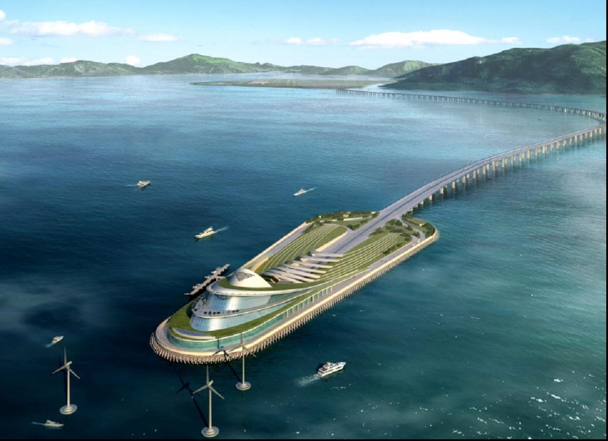
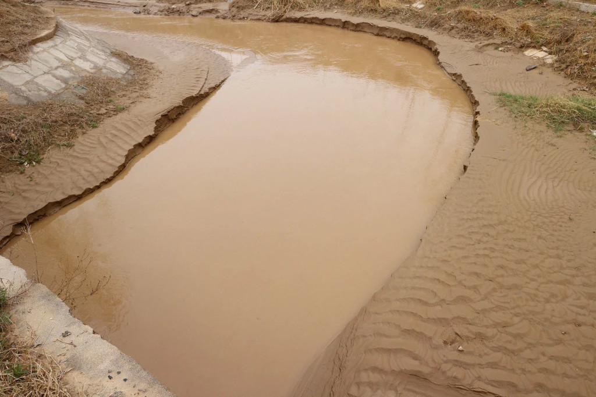
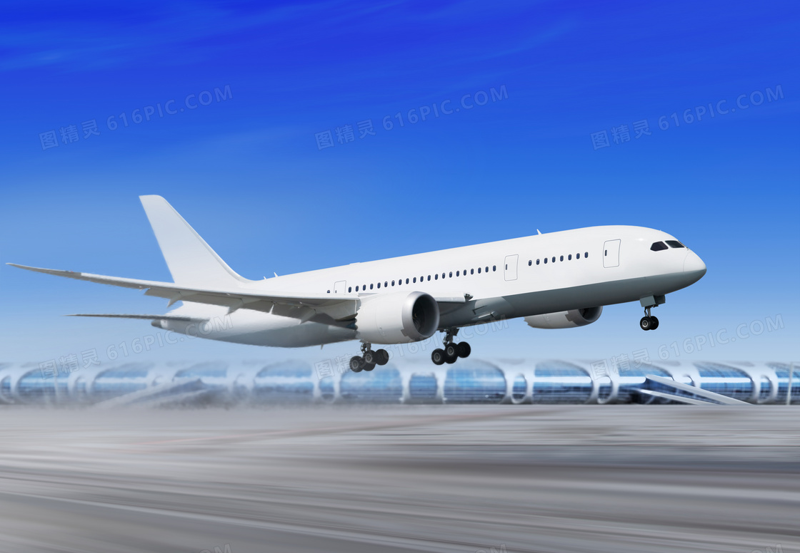
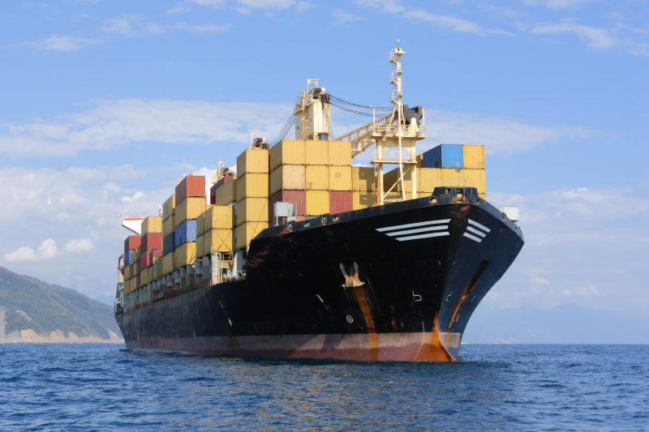
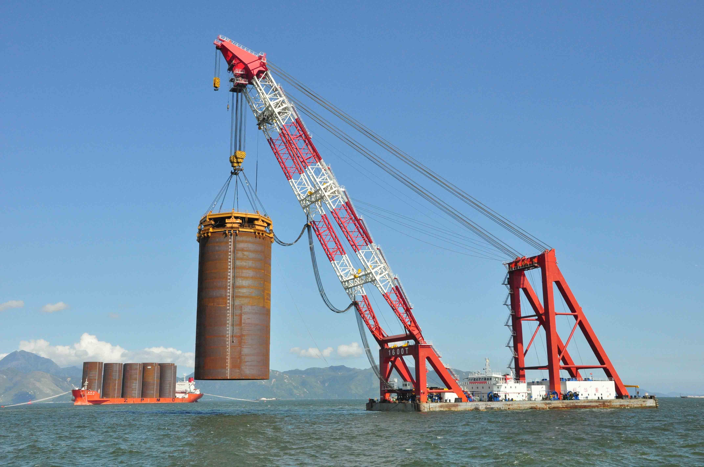
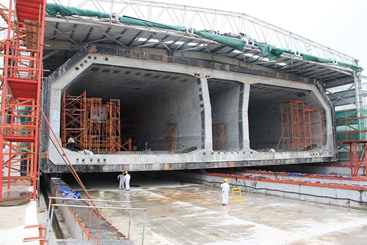
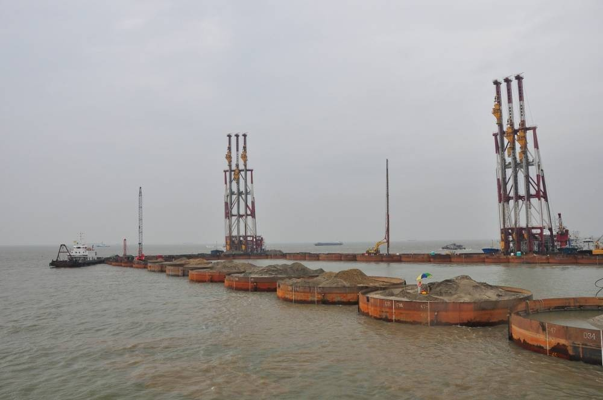

第一
湾区第一创意展，汇聚澳门与珠海高校智慧结晶，引领未来科技与艺术融合新潮流
最大
百件作品最大规模首发，涵盖IT、艺术、设计等多元领域，展示青年学子创新实力与高价值专利
唯一
唯一资本精准对接平台，为投资者提供湾区未来项目优先筛选权，助力学生与企业实现创意商业转化
震惊
湾区青年用创意打破资本壁垒！
———— 澳门×珠海高校毕业设计展
让世界见证中国新生代的创造力！
"当资本与创意之间横亘着一道高墙，当学生作品难以触达投资人，当区域壁垒阻碍跨域合作，谁来打破僵局？"
自主研发
"没有经验？我们用100+作品构建桥梁！
没有平台？我们打造唯一资本对接专区！
没有先例？我们用NFT数字艺术、AI算法专利、跨界设计，让创意成为资本的语言！"
成果突破
"仅用四个月筹备，汇聚两岸三地顶尖高校，吸引30+投资机构入驻洽谈区，实现10+项目现场签约！
从0到1的跨越：学生作品获得专利授权，小微企业找到技术合伙人，投资人锁定未来独角兽！
这不是毕业展，这是湾区创意经济的引爆点！"
要建造海底隧道，首先要找到能把桥梁和海底隧道连接起来的岛屿，由于附近海域没有现成的岛屿可供使用，这就必须修建人工岛来连接海底隧道和桥梁。而伶仃洋是—个典型的弱洋流海域，加上每年有大量的泥沙从珠江口流入伶仃洋，如果人工岛长度和宽度过大，就会起到阻挡泥沙流入大海的作用，水阻率一旦超过10%，泥沙就有可能被阻挡沉积，在岁月流逝中让伶仃洋变成一片冲积平原。
人工岛图片
人工岛是连接港珠澳大桥与海底隧道的主要支撑

为什么要建造海底隧道以下总结三点原因
-

泥沙阻碍水流
在这个伶仃洋海域每年都会有大面积的泥沙堆积，如果在港珠澳大桥中间不修建海底隧道，那么水流就会受到影响，有于桥的两侧会形成坡度，导致泥沙堆积，阻碍水流和交换。
-

航空线高的限制
如果把港珠澳大桥全部建成海面上，那么它的高度超过了大屿山机场的限高范围，影响飞机的飞行。
-

难度大及船只
现在隧道的那个地方正处于海中心，在海中心搭建是很困难的，一开始是很容易，但越到中间的时候就会越难，所以大桥建设必须有东西支撑，而且还是在海里，更是难上加难。
800万立方米淤泥
要修筑625米长的人工岛以连接桥梁和海底隧道，而在修筑人工岛的地方有一层15到20米的淤泥，由于淤泥的物理属性，如果在其基础上做抛石斜坡或常规重力式沉箱的话，抛石或重力沉箱就会因淤泥而打滑，地基不稳。最常规的办法是把淤泥全部清理掉，或者用排水结固的办法使淤泥变干，然后再抛石或用沉箱坐稳。
3厘米误差
成功修筑人工岛的前提是要制造出120个550吨重、55米高的巨型钢桶，但由于钢桶的体积过于庞大，不得不采用模块组装的办法，将钢桶分成72个模块，一组一组的拼装。但这种做法也会带来一个问题，由于钢桶的误差要求被限制在3厘米以内，而每一次拼接都会有一定的误差，加上拼接的模块数量达72个，以及钢桶高达55米的巨大体积非常不利于加工和制造，在多次拼接后有可能无法将误差控制在3厘米以内。



Copyright @ 2024-2025 毕业设计展 All Rights Reserved.